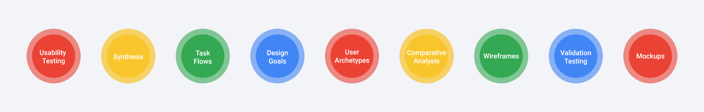
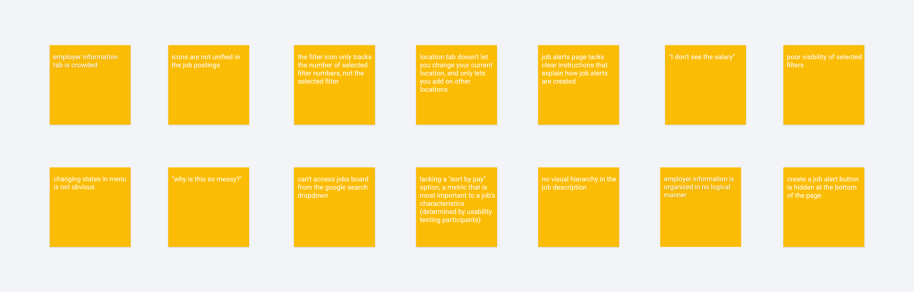

Context
Google recently released Google Jobs Board, a job aggregation tool which scrapes job postings from various websites. The tool aims to reduce repetitive job postings that users see when visiting multiple job boards, and does a pretty good job (ha-ha) at that. I noticed a number of usability issues when I was using the tool which made the content both congested and at points, overwhelming. As a designer, this made me wonder.

Process
A quick brainstorming session helped me think of general approaches the problem without operationalizing any methods. I prevented committing myself to methods that sounded good on paper, but not in practice. I needed to test the usability of the product, so I opted for Nielson's user interface usability test. After I picked a starting point, the data and the need guided the model. This is the evolution of my process.
Usability Testing

I needed a way to validate or reject my initial assumptions. To do this, I conducted a usability test based on Jakob Nielson's 10 user interface heuristics with 5 participants and tasked participants with the following scenario.
You are applying to your dream job on the Google Jobs Board
I asked participants to provide a stream of consciousness as they acted out the prompt. In an attempt to mimic real life I did not provide hints unless asked, as people are usually unable to ask the person besides them for help. This was strategic because it identified usability issues that would otherwise go unnoticed by receiving prompts. I expected participants to have a positive experiences with a Google product, but most of them actually found the interface overwhelming. To my surprise, most participants did not use the job title and employer filter options to refine their query. Their initial impression upon entering these components was confusion due to the sheer amount of information displayed in each tab. Here are some of their other responses.
Each section evaluates one heuristic violation, but the structure of the test comes a limitation - it does not map out all the issues related to one component. I needed a way to visualize these relationships.
Synthesis
I started off by summarizing participant responses and assigning popular issues with a higher severity rating. This was super helpful in both prioritizing issues that needed to be solved first and locating the component responsible for the issue. From there, I diverged and converged groups. I assigned similar issues to one group, and began to converge by creating subgroups. Once this process was complete, four major groups emerged.
Task Flow
Now that I had each issue mapped out, I wanted to look at how the issues were created. Using a task flow really helped with identifying not only the interface related issues, but experience related issues as well. Taking a holistic approach insured my designs from any product pitfalls.

Design Goals
Now that I had identified the problem in it's entirety, I came up with design goals which would help guide the rest of my designs. Having this as a point of reference provides focus, and assures the final product achieves these goals, and not other ones.
Organization
Information is laid out in a logical order
Simplicity
Only relevant information is displayed, as every piece of irrelevant information diminishes the value of relevant ones
Feedback
The design reflects the choices the user makes
Archetypes
I needed to establish users to ensure their needs were taken into consideration throughout the design process. Google's users are too demographically diverse to be condensed into a single (or even a collection of) personas. In cases like this, I define users based on the behavioural characteristics by using archetypes.
Browser
Abby is employed, but leisurely browses job postings in hopes that she will find something that fits her needs better. She is reminded of the Jobs Board through alerts send to her email.
Inquirer
David is in need of a job and browses the job board on a daily basis until he finds employment. He uses more than one job bpard and applies to as many jobs as he can.
It's important to note that these archetypes are not fictional. In name, maybe, but the essence of these archetypes are based off of the usability tests that I ran, where I asked participants about their current job browsing habits and what factors prompt job hunting.
Comparative Analysis and Precedents
I wanted to see how competing job boards tackled the problem of organizing information-rich content. I had to be really careful about analyzing the benefits of some features over others as other companies do not provide the same value proposition as Google's. Looking at precedents taught me an valuable lesson - that analyzing competing sites should be done cautiously as value propositions differ from company to company. I was initially attached to Glassdoor's company rating feature and wanted to include the same feature in my wireframes. It was not until I revisited both my research and Google's value proposition(aggregation of data to reduce redundant information) that I realized rating companies does not align with Google's point of differentiation, and should not be reflected in the designs.

Wireframes
It can be really overwhelming when there are a lot of components to design, which is why I usually refer to atomic design when I need some structure. I started designing the smallest components of the page, which included the filter options interface and the icon information, before moving onto the larger ones, such as the job posting information and entry points.
Every time I designed a new component I checked in with the design goals to make sure I was on track.
Validation Testing
I started off with some rough sketches, beginning with paper prototyping to flush out user flow issues. From there, I was in a good position to begin the high fidelity mock ups. I made three iterations, prototyping interactions on Protopie and having different users test new changes.
Mockups
Job Alerts
A top level "Create an Alert" button means never miss out on your dream job again.
Job Postings
Postings with unified information makes browsing faster, so you can spend more time applying to jobs instead of finding them.
Job Description
Anchored text filters out less relevant information and provides order and structure to a large body of text
Job Filters
Mapping one filter option to one dropdown menu enhances visibility - you can always see what filters you've applied.
Employer Filter
The new employer menu maps companies to industries, creating a structure that allows you to filter companies based to your interests.
A Final Note
This was a super challenging project. I was (and still am) intimidated to redesign a Google product as I have a lot of admiration for all of their projects and view them as the leading experts in all things product & UX. Through testing the product with others, I realized that not all products are perfect and that I had fallen for the argument from authority fallacy. Although there are a few things I would like to revisit or research further, I'm quite happy with the end result.
Your personal preferences do not trump design documents. You have to comply with design guidelines. Since this is a Google product, it has to look like one. I made reference to the material design document, which outlines everything from color scheme to typography, to ensure the final product looked like it belonged in Google's portfolio.
Don't forget to reference the research you've done at earlier stages. Research is not a checklist item that should be completed for the sake of doing research, the data matters and your design choices should reflect the insights - it needs to guide the final designs.
If you've made it this far, thanks for reading!